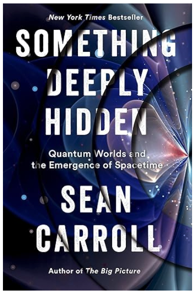
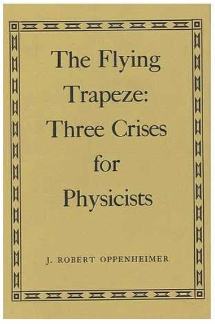

Odd zeta function relations
From superconductivity to (new?) formulas for the zeta function of odd arguments, August 2, 2024
Welcome back! In this post (disclaimer: targeted for the more mathematically inclined reader) I will explore a topic situated somewhere between physics and pure mathematics. I will tell a little story about how I stumbled across some peculiar, puzzling, and in my opinion aesthetically pleasing relations for the zeta function when I was benchmarking a theory for superconductivity several years ago.
Let us start by recapitulating some basic properties of the zeta function. For \( n > 1 \) the zeta function is defined as the infinte sum \[ \zeta(s) \equiv \sum_{n = 1}^{\infty} \frac{1}{n^s}. \] Leonhard Euler proved in 1737 (see, e.g., John Derbyshire's Prime Obsession) a staggering connection between the zeta function and the prime numbers: \( 1/\zeta(n) = \prod_{p \; \mathrm{prime}} (1-p^{-n}) \). And Bernhard Riemann demonstrated a connection between the nontrivial zeros of the analytically continued zeta function and the prime counting function in his landmark paper from 1859. Proving (or disproving) the conjecture that Riemann posed concerning the location of these zeros is by many regarded as the most important unsolved problem in pure mathematics today.
Now, consider the zeta function evaluated at positive integer arguments, \( \zeta(n) \) with \( n \in \mathbb{N} \), since this is what will appear later. It is well known that for even integer arguments the zeta function evaluates to \( \zeta(2n) = (-1)^{n+1} (2\pi)^{2n} B_{2n} /(2 n!) \) where \( B_{2n} \in \mathbb{Q} \) is a Bernoulli number. The corresponding situation for odd integer arguments, \( \zeta(2n+1) \), is different as no simple proportionality relation to, e.g., \( \pi^{2n+1} \) exist. For instance, it is not known whether \( \zeta(3) \) is transcendental. Leonhard Euler found the series representation (1772) \[ \zeta(3) = \frac{\pi^2}{7} \left( 1 - 4 \sum_{n = 1}^{\infty} \frac{\zeta(2n)}{2^{2n} (2n+1)(2n+2) } \right), \] beautifully relating the zeta function of an odd argument to all the even-argument values. While the above results are puzzling and mesmerizing in their own right, to a physicist the results gain additional beauty and foothold knowing that particular values of \( \zeta(s) \) commonly appear in physics and statistical mechanics. In the following I will tell you about such a case from my own field of superconductivity and how formulas similar to Euler's popped out.
There is no doubt that the Soviet union harboured many influential physicists. One of most famous ones is Lev Landau (photo source: link), who forged a powerful principle for continuous phase transitions. In the early days of superconductivity, theorists were working hard to establish a microscopic theory following Heike Kamerlingh Onnes' experimental discovery in 1911. The major breakthrough came with Bardeen, Cooper, and Schrieffer's (BCS) theory in 1957. Landau's student, Lev Gor'kov (photo source: link) subsequently succeeded in showing that microscopic version of Landau's theory reproduced essential features of BCS theory.
In a modernized (generalized) version of the microscopic theory of Gor'kov that I was working on with collaborators in 2020 (reference below) the two following Feynman diagrams are involved in calculating the coefficients of the free energy:
Here, \( \Delta(\boldsymbol{p}) \) is the (form factor of the) superconducting order parameter of relative momentum \( \boldsymbol{p} \), which onsets at the critical temperature \( T_c \). Evaluation of the above Feynman diagrams, assuming a temperature close to the critical temperature \( 1 - T / T_c \ll 1 \), results in the free energy \begin{align} \Delta F &= \alpha(T) \lvert \Delta_0 \rvert^2 + \beta \lvert \Delta_0 \rvert^4, \\ \alpha(T) &= - V \int \frac{\mathrm{d} \boldsymbol{p}}{(2\pi)^d}~\Big( \frac{\tanh\left[ \xi(\boldsymbol{p}) / (2T) \right] }{2\xi(\boldsymbol{p})} -\frac{\tanh\left[ \xi(\boldsymbol{p}) / (2T_c) \right]}{2\xi(\boldsymbol{p})} \Big) \Delta(\boldsymbol{p})^2, \\ \beta &= \frac{V}{2T^3} \int \frac{\mathrm{d} \boldsymbol{p}}{(2\pi)^d} h( \xi(\boldsymbol{p})/ T ) \Delta(\boldsymbol{p})^4, \end{align} wherein \( h(x) \equiv \frac{\sinh{x}-x}{4x^3(1+\cosh{x})} \), \( \xi(\boldsymbol{p}) \) is the (normal-state) dispersion relation, and \( \Delta_0 \) is the superconducting gap. When I first derived this several years ago, it was crucial to benchmark the result in a known case. Serving as such, one may consider the simplest case of a constant (‘\(s\)-wave’) order parameter, \( \Delta(\boldsymbol{p}) = 1 \), and quadratic dispersion, \( \xi(\boldsymbol{p}) = p^2/(2m) \). This case was originally considered by Gor'kov, who cryptically stated the resulting parameter \( \beta \) in terms of \( \zeta(3) \) (without much detail as to how the calculation was done, a classic feature in the Soviet physics papers). To evaluate the basic integral of interest, \( \frac{1}{2} \int_0^{\infty} \mathrm{d} u~\frac{\sinh{u}-u}{4u^3(1+\cosh{u})} \), let's involve the following known series expansions: \begin{align} \frac{2}{1+\cosh(x)} &= \cosh^{-2}(x/2) = 4e^{-x} \sum_{n=0}^{\infty} (-1)^n (1+n)e^{-nx}, \\ \sinh(x)-x &= \frac{\sqrt{\pi}}{2} \sum_{m=1}^{\infty} \frac{x^{2m+1}}{4^m \Gamma(m+1) \Gamma(m+\frac{3}{2})}, \\ \sum_{n=0}^{\infty} (-1)^n \frac{1}{(1+n)^x} &= (1-2^{1-x}) \zeta(x), \end{align} where \( \Gamma(n) \) is the Gamma function. Replacing the integrand using the first two relations and carrying out the integral results in a single sum. Obtaining this sum I thought something along the lines of: ‘Well, this nasty sum better be equal to the value obtained by Gor'kov’ [which is \(\frac{7\zeta(3)}{32\pi^2} \)]. And by bluntly equating the obtained sum with the result derived by Gor'kov one finds: \[ \frac{7\zeta(3)}{32\pi^2} = \frac{\sqrt{\pi}}{8} \sum_{l = 1}^{\infty} (1-2^{3-2l}) \frac{\Gamma(2l-1)}{4^l\Gamma(l+1)\Gamma(l+\frac{3}{2})} \zeta(2l-2) \Rightarrow \] \[ \zeta(3) = \frac{8\pi^2}{7} \sum_{n=0}^{\infty} \frac{\left( 1-2\cdot 2^{-2n} \right) \zeta(2n)}{(2n+1)(2n+2)(2n+3)}, \] where \( \zeta(0) = -1/2 \). The series is strikingly similar to Euler's original formula. In fact, both of the summands individually yield a series expansion for \( \zeta(3) \): \begin{align} \zeta(3) &= -\frac{8\pi^2}{5} \sum_{n=0}^{\infty} \frac{\zeta(2n)}{(2n+1)(2n+2)(2n+3) 2^{2n} }, \\ \zeta(3) &= -\frac{8\pi^2}{3} \sum_{n=0}^{\infty} \frac{\zeta(2n) }{(2n+1)(2n+2)(2n+3)}. \end{align} The most rapidly convergent series of the two, along with plenty of other variations, was discovered by Chen and Srivastava in 1998 (reference below). The latter one, however, does not appear to have been discussed in the published literature.
The rest of this post will be concerned with some speculative, yet somewhat intuitive, generalizations of the above result to all of \( \zeta(2n+1) \). As such, I define the function \[ A(n) \equiv (-1)^n \frac{ 2^{2n+1} \pi^{2n}}{2n+1} \sum_{m=0}^{\infty} \frac{\zeta(2m)}{\prod_{j=1}^{2n+1} (2m+j)}. \] Basic manipulations aided by Mathematica reveals that this function can be expressed as a simple weighted sum of \( \lbrace \zeta(2m+1) \rbrace_{m=1}^n \), \[ A(n) = \sum_{m=1}^{n} a_{m,n} \zeta(2m+1), \] wherein the weights satisfy \( a_{m,n} = q_{m,n} \pi^{2(n-m)} \) with \( q_{m,n} \in \mathbb{Q} \). In particular, \( a_{n,n} = 1 \), such that \(A(1) = \zeta(3) \). Determining the first \(a_{m,n}\)'s numerically and isolating \( \zeta(2n+1) \) gives: \begin{align} \zeta(3) &= A(1), \\ \zeta(5) &= A(2) + \frac{4\pi^2}{15} \zeta(3), \\ \zeta(7) &= A(3) + \frac{8\pi^2}{21} \zeta(5) - \frac{4\pi^4}{105} \zeta(3), \\ \zeta(9) &= A(4) + \frac{4\pi^2}{9} \zeta(7) - \frac{8\pi^4}{135} \zeta(5) + \frac{8\pi^6}{2~835} \zeta(3), \\ \zeta(11) &= A(5) + \frac{16\pi^2}{33} \zeta(9) - \frac{4\pi^4}{55} \zeta(7) + \frac{16\pi^6}{3~465} \zeta(5) -\frac{4\pi^8}{31~185} \zeta(3), \\ &\vdots \end{align} Now, in the right hand side of these equations we may replace the \( \zeta(2m+1) \)'s by the expressions from the preceding lines. This leaves us with \( \zeta(2n+1) \) expressed exclusively in terms of \( \lbrace A(m) \rbrace_{m=1}^{n} \), i.e., \( \lbrace \zeta(2k) \rbrace_{k=1}^{\infty} \), respectively. This is really just inverting the expression for \( A(n) \) by ‘Gaussian elimination’, resulting in: \begin{align} \zeta(3) &= A(1), \\ \zeta(5) &= A(2) + \frac{4\pi^2}{15} A(1), \\ \zeta(7) &= A(3) + \frac{8\pi^2}{21} A(2) + \frac{4\pi^4}{63} A(1), \\ \zeta(9) &= A(4) + \frac{4\pi^2}{9} A(3) + \frac{104\pi^4}{945} A(2) + \frac{8\pi^6}{525} A(1), \\ \zeta(11) &= A(5) + \frac{16\pi^2}{33} A(4) + \frac{212\pi^4}{1~485} A(3) + \frac{944\pi^6}{31~185} A(2) +\frac{604\pi^8}{155~925} A(1), \\ &\vdots \\ \zeta(2n+1) &= \sum_{m=1}^n b_{m,n} \pi^{2(n-m)} A(m) \\ \zeta(2n+1) &= \pi^{2n} \sum_{m = 1}^n b_{m,n} (-1)^m \frac{2^{2m+1}}{2m+1} \sum_{k=0}^{\infty} \frac{\zeta(2k)}{\prod_{j=1}^{2m+1}(2k+j)}, \end{align} where the (new) weights are all rational and positive, \( b_{m,n} \in \mathbb{Q}^+ \) and \( b_{n,n} = 1\). Although I leave this without any rigorous proofs, all of the above formulas have been verified to numerical precision. These relations are reminiscent of the more rapidly converging series found by D. Cvijović and J. Klinowski in 1997 (reference below). To me, they serve as mesmerizing connections between the somewhat mysterious numbers \( \zeta(2n+1) \) and the more familiar \( \zeta(2n) \).
If you like what you just read, please consider sending me an email with ‘unbraid’ in the subject field. I might set up an email subscription. Until next time!
References / further reading:
\( \circ \) L. P. Gor'kov, Microscopic derivation of the Ginzburg-Landau equations in the theory of superconductivity, J. Exptl. Theoret. Phys. (U.S.S.R.) 36, 1918-1923 (1959)
\( \circ \) G. Wagner, HSR, F. Flicker, and Steven H. Simon, Microscopic Ginzburg-Landau theory and singlet ordering in Sr\(_2\)RuO\(_4\), Phys. Rev. B 104, 134506 (2021)
\( \circ \) M.-P. Chen and H. M. Srivastava, Some families of series representations for the Riemann \( \zeta(3)\), Results in Mathematics 33, 179 (1998)
\( \circ \) D. Cvijović and J. Klinowski, New rapidly convergent series representations for \( \zeta(2n+1) \), Proc. Amer. Math. Soc. 125, 1263-1271 (1997)
Counting loops
A peek into the world of fully packed loops on a square lattice, June 29, 2024
Hello, and welcome to my blog! In this (very first!) post I will explore the topic of counting loops on a square lattice, both using exact and numerical (Monte Carlo) methods. This is a topic that for me developed from curiousity when reading the puzzle page in a Norwegian newspaper, but which developed into a research topic. Some of the python and fortran code I wrote to generate figures in this post can be found in my GitHub repository. I also provide a few references for further reading at the end of the post.
We will consider an open rectangular grid graph \( G = (V, E) \). Recall that a graph is just an ordered pair of vertices (or points), \( V \), and edges (or links), \( E \), each connecting two distinct vertices. A grid graph is a graph that forms a regular tiling, in this case a square tiling with open boundaries. Precisely, let our graph consist of \( \lvert V \rvert = 2m \times 2n \) vertices and \( \lvert E \rvert = 2(4mn - n - m) \) edges connecting nearest neighbour vertices. [Note that had we instead considered a grid embedded on a torus (periodic boundaries), then there would just have been twice as many edges as vertices.] Imagine now that someone (me) asks you to color every edge either white or blue, but in such a way that every vertex has exactly two blue edges connected to it. If you approach the problem by thinking locally, this means that each vertex, except at corners and edges, looks like one of the following six:
In the end, if you succeed, you will find what is called a fully packed loop configuration (FPL). As the name suggests, it will be a collection of closed loops (or possibly just one) that completely fill the grid. Here is an example in the case of \( n = m = 8 \) (containing \( \ell = 18 \) loops):

These configurations go by various names in the literature. For instance, in graph theory they are called 2-factors (of \( G \)). In statistical mechanics, they are related to two-dimensional ice (like water ice), but also spin ices in a more modern context. In the rest of this post we will be concerned with the following questions:
(A) How many FPLs exist (on a given lattice)?
(B) What is the distribution of loops in the FPLs (on a given lattice)?
I will not pretend to be the first to have posed these questions, especially not (A), which has accumulated a lot of interesting history. In particular, for certain boundary conditions, there are beautiful and exact answers to (A). Elliott Lieb famously showed the asymptotic scaling \( \sim {1.5396\dots}^{4n^2} \) for \( m=n \) in 1967. For domain wall boundary conditions there is a mapping to combinatorial objects called alternating sign matrices, which have been enumerated exactly for \( m = n \) to \( \prod_{k = 0}^{n-1} \frac{(3k+1)!}{(n+k)!} \). We will neither explain, nor derive any of these amazing results, but rather discuss some pragmatic and direct approaches as to how one might go about to count FPLs in a brute force fashion.
First, let us assume that you found one FPL when first given the above task. We will now look at a recipe to find all the remaining ones. As such, let me introduce you to an operation we will need, the plaquette flip:

As shown, this operation flips the orientation of two parallel blue lines. On the square lattice it turns out that this single operation is enough to generate all the remaining FPLs, given any single one. That is, repeated applications of plaquette flips is sufficient to generate all possible configurations. So all you need to do is to locate plaquettes in your FPL with parallel blue lines, flip one at random, and keep track of which configurations you have seen before. If you are persistent and keep flipping random plaquettes for long enough, you will have encountered them all. At this point you might find it unsatisfactory that I am not presenting a proof of the above statement. In which case, I encourage you to first try to prove something simpler, namely that all FPLs must have at least one flippable plaquette on the graph considered. [Hint: there must always be one not too far from any of the graph corners.] A complete and elegant proof logic can for instance be found in Appendix B of this paper. Coding up this direct strategy in python, making use of the NetworkX package, gives the table below (where in the rightmost column I have partitioned the configurations into sectors with a given number of loops \( \ell \)).
| Graph | Number of configurations | Loop partitions, \( \lbrace N_{\ell} \rbrace_{\ell = 1}^{mn} \) |
|---|---|---|
| \( 2 \times 2 \) | \( 1 \) | \( \lbrace 1 \rbrace \) |
| \( 2 \times 4 \) | \( 2 \) | \( \lbrace 1, 1 \rbrace \) |
| \( 2 \times 6 \) | \( 5 \) | \( \lbrace 1, 3, 1 \rbrace \) |
| \( 2 \times 8 \) | \( 13 \) | \( \lbrace 1, 5, 6, 1 \rbrace \) |
| \( 4 \times 4 \) | \( 18 \) | \( \lbrace 6, 7, 4, 1 \rbrace \) |
| \( 4 \times 6 \) | \( 222 \) | \( \lbrace 37, 77, 66, 32, 9, 1 \rbrace \) |
| \( 4 \times 8 \) | \( 2953 \) | \( \lbrace 236, 709, 907, 672, 317, 95, 16, 1 \rbrace \) |
| \( 6 \times 6 \) | \( 13903 \) | \( \lbrace 1072, 3230, 4159, 3140, 1589, 562, 132, 18, 1 \rbrace \) |
| \( 4 \times 10 \) | \( 40043 \) | \( \lbrace 1517, 5969, 10292, 10494, 7108, 3336, 1077, 224, 25, 1 \rbrace \) |
| \( 6 \times 8 \) | \( 972080 \) | \( \lbrace 32675, 130378, 231859, 247769, 180548, 96001, 38411, 11538, 2507, 363, 30, 1 \rbrace \) |
Let us take a look at the \( 4 \times 4 \) case. Here are all the 18 FPLs partitioned into sectors with 1, 2, 3, and 4 loops (ignore the inset in the lower right for now, it will be referred to later):

Starting from any one of these you can convince yourself that you can get to any other by flipping plaquettes. At this point it can be mentioned that FPLs consisting of a single loop go by the name of Hamiltonian cycles in the graph theory literature. They have history dating back to 1736 and Euler's problem of the seven bridges in Königsberg, and they are of interest in complexity theory [the Hamiltonian cycle problem is NP-complete]. In the present context, impressive efforts in enumerating them have been made, such as by Ed Wynn who reached lattices of size \( 20 \times 20 \) (sequence no. A209077 in OESIS). Here is what the numbers \( N_{\ell = 1} \) look like as a function of the number of vertices for a \( 2n \times 2n \) graph, with a logarithmic vertical axis [caveat: here configurations related by rotations and reflections have been counted once]:

Note that the base in the fit (black line), \(1.426\dots \), is fairly close to Lieb's value, despite the prior number enumerating a quite restricted and non-locally constrained class of configurations, namely those containing a single loop.
We now move on to a stochastic method that can be used to address question (B), in principle on very large systems. [For another stochastic way to sample FPLs, see for instance Appendix D in this paper.] Concretely, I will first propose a simple function that has FPLs as its lowest-energy configurations. This function (Hamiltonian) can then be simulated with Monte Carlo methods, providing an unbiased probability distribution for the FPLs. Sampling this distribution repeatedly, we obtain FPL loop distributions (counting the number of loops in each sampled FPL). Let us start with the function (Hamiltonian). Here it is: \[ H = \sum_{v \in G^{\circ}} \Big( \sum_{e \in A(v)} \sigma_e \Big)^2 + \sum_{v \in \partial G} \Big( \sum_{e \in A(v)} \sigma_e - 1 \Big)^2 + \sum_{v \in \partial^2 G} \Big( \sum_{e \in A(v)} \sigma_e - 2 \Big)^2 \] Let me first explain the function and notation. I have assigned binary variables \( \sigma_e = \pm 1 \) that live on the graph edges: \( \sigma_e = +1 \) is a blue bond, and \( \sigma_e = -1 \) is white bond. The outermost sums in the three terms run over vertices in the interior (\( G^{\circ} \)), edges (\( \partial G \)), and corners (\( \partial^2 G \)) of the graph, respectively, see also the inset in the lower right of the earlier figure. The innermost sums run over edges adjacent to a given vertex \(v\), \(e \in A(v)\). Now, the individual (semi-positive definite) terms square to zero if and only if there are precisely two \( \sigma_e = +1 \) next to the given vertex. [In the interior each vertex has four adjacent edges, three on the edges, and two in the corners.] This local picture coincides with our earlier definition of FPLs, so it should now be evident that all FPLs are indeed the ground states of this Hamiltonian. [Question: can you formulate a function (Hamiltonian) that has only the Hamiltonian cycles as its ground states?]
With the function established, I will outline a simple procedure in which we can pull random FPLs out of a hat (that is, a pseudo-random number generator). The idea will be the following. We start with a completely random initial set of variables \( \lbrace \sigma_e \rbrace \). Then, the following move is suggested: (\(\star\)) Look at a variable at random and check whether the value of \( H \) is lowered by changing that variable (to blue if it was white, and to white if it was blue). If the energy is not lowered by the proposed change, then we discard the proposal. If the energy is lowered by the move, on the other hand, we accept the proposal with a probability of \( \min\lbrace 1, \exp(- \Delta H / T) \rbrace \), where \( \Delta H \) is the change of \( H \) under the proposed move, and \(T\) is an introduced ''temperature'' (assumed much smaller than 1 in this case). Now, repeating the step (\(\star\)) many times will eventually equilibriate the system in a ground state of \( H \) and hence a FPL. What is outlined here is in essence the Metropolis—Hastings algorithm, a prime example of a Markov Chain Monte Carlo method.
Implementing the above algorithm and counting the number of loops in the encountered FPL when equilibrating more than \(10^4\) times results in histograms like those displayed below for systems of sizes \(10\times 10\) and \(20\times 20\):

The resulting loop distributions are seen to be very well described by (teal lines in the figure) \[ p_0(\ell; \alpha, \beta) = \mathcal{N} \ell^{\alpha} \exp(-\beta \ell^2), \] where \( \mathcal{N} = (2\beta^{(1+\alpha)/2})/\Gamma([1+\alpha]/2) \) is the normalization constant, and \( \alpha \) and \(\beta \) are fitting parameters. The distribution \(p_0\) peaks at \( \ell_0 = \sqrt{\alpha/(2\beta)} \), which is plotted after fitting to multiple sampled loop distributions for several \( 2n \times 2n \) grids in the lower panel (green diamonds, left axis). Note that in the plot I have also divided through by \(n^2\) (the number of vertices scales roughly as \(4n^2\)). The distribution peak per \(n^2\), i.e, the most probable number of loops, is seen to depend weakly on \(n\), suggesting that the peak position scales roughly linearly with the number of grid vertices. The right axis of the same plot (red stars) shows the full width at half maximum (FWHM) of the peak (also per \(n^2\)), which displays a trend very similar to the peak position. I would be curious to know whether (and what) these numbers, when normalized by the number of vertices, converge (to) in the thermodynamic limit... If you have a clue, I would be grateful to know.
To round off, here is a little Hamiltonian cycle puzzle dressed in recreational variations of Jordan's curve theorem for you to ponder upon:

References / further reading:
\( \circ \) P. Zinn-Justin, Six-Vertex, Loop and Tiling models: Integrability and Combinatorics, habilitation thesis (2009)
\( \circ \) O. B.-Pantić and R. Tošić, On the number of 2-factors in rectangular lattice graphs, Publications de l'Institut Mathématique. Nouvelle Série 56, 23-33 (1994)
\( \circ \) E. H. Lieb, Residual Entropy of Square Ice, Phys. Rev. 162, 162 (1967)
\( \circ \) D. Zeilberger, Proof of the Alternating Sign Matrix Conjecture, arXiv:math/9407211 (1994)
\( \circ \) D. Bressoud and J. Propp How the alternating sign matrix conjecture was solved, Notices of the AMS 46, 637-646
\( \circ \) M. Hermele, M. P. A. Fisher, and L. Balents, Pyrochlore photons: The \(U(1)\) spin liquid in a \(S=\frac12\) three-dimensional frustrated magnet, Phys. Rev. B 69, 064404 (2004)
\( \circ \) E. Wynn, Enumeration of nonisomorphic Hamiltonian cycles on square grid graphs, arXiv:1402.0545 (2014)
\( \circ \) Z. Zhang and H. S. Røising, The frustration-free fully packed loop model, J. Phys. A: Math. Theor. 56 194001 (2023)
About Me

\( \circ \) Patent consultant at HØIBERG P/S
\( \circ \) DPhil, theoretical physics, 2020
\( \circ \) Physics interests: superconductivity, statistical mechanics, mathematical physics
\( \circ \) I enjoy Numberphile
\( \circ \) My Erdös number is 4
\( \circ \) Pop me an email at henrisro[at]proton.me
Book recommendations
Something Deeply Hidden by Sean Carroll (2019)
The Flying Trapeze: Three Crises for Physicists by J. Robert Oppenheimer (1965)
Quiet: The Power of Introverts in a World That Can't Stop Talking by Susan Cain (2012)

Ecology, Community and Lifestyle by Arne Næss (1989)
Physics and Philosophy by Werner Heisenberg (1958)
The Blue and Brown Books by Ludwig Wittgenstein (1958)
The Stranger by Albert Camus (1942)

Topological Quantum by Steven H. Simon (2023)

The Knot Book by Colin Adams (1994)
Methods of Quantum Field Theory in Statistical Physics by A. A. Abrikosov, L. Gor'kov, and I. E. Dzyaloshinski (1963)